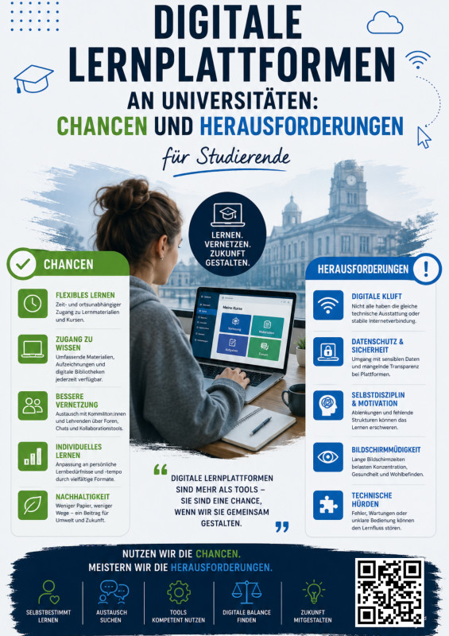

Digitale Lernplattformen an Universitäten: Chancen und Risiken für Studierende
Eine umfassende Auseinandersetzung mit den Möglichkeiten und Grenzen digitaler Lehre im Hochschulkontext.
0%
Studierende nutzen E-Learning
0+
Digitale Plattformen
0M
Online-Kurse weltweit
Warum digitale Lernplattformen entscheidend sind
Digitale Lernplattformen prägen den modernen Studienalltag wie nie zuvor. Sie verbinden Flexibilität mit Effizienz und ermöglichen ortsunabhängiges, selbstgesteuertes Lernen – ein entscheidender Vorteil für Studierende von heute.
Modernes Lernen
Interaktive Dashboards und übersichtliche Kursstrukturen
Kollaboration online
Zusammenarbeit ohne räumliche Grenzen
Datengestütztes Lernen
Personalisierte Lernpfade durch KI-Analyse
Unser Projekt im Überblick
Ein kurzer Einblick in das Thema digitale Lernplattformen — visuell aufbereitet.
Video
Highlights
🌍 Flexibilität & Zugänglichkeit
Lernen von überall und jederzeit – digitale Plattformen ermöglichen orts- und zeitunabhängiges Studieren.
🎯 Individuelles Lerntempo
Studierende können Inhalte in ihrem eigenen Tempo bearbeiten und bei Bedarf wiederholen.
🤝 Kollaboration
Digitale Tools fördern die Zusammenarbeit zwischen Studierenden über Grenzen hinweg.
⚠️ Technische Hürden
Nicht alle Studierenden haben Zugang zu stabiler Internetverbindung oder geeigneter Hardware.
📱 Informationsüberflutung
Die Vielzahl an Plattformen und Materialien kann überwältigend wirken.
🧠 Selbstdisziplin
Eigenverantwortliches Lernen erfordert hohe Motivation und Zeitmanagement-Fähigkeiten.
🤖 KI-gestützte Lernassistenten
KI wird zunehmend in Lernplattformen integriert, um personalisierte Lernpfade zu erstellen.
🔄 Hybride Lehrformate
Universitäten kombinieren Präsenz- und Online-Lehre, um die Vorteile beider Welten zu vereinen.
🎮 Micro-Learning & Gamification
Kurze Lerneinheiten und spielerische Elemente steigern die Motivation nachhaltig.
Angebote
Entdecken Sie unsere kuratierte Auswahl an Workshops, Webinaren und Lernressourcen, die Sie auf dem Weg durch das digitale Studium begleiten – praxisnah, fundiert und auf Ihre Bedürfnisse zugeschnitten.
NEWSLETTER
Bleiben Sie informiert
Erhalten Sie regelmäßig Updates zu neuen Plattformen, Trends und Veranstaltungen rund um digitales Lernen.
Chancen & Herausforderungen

Chancen und Herausforderungen
LERNEN. VERNETZEN. ZUKUNFT GESTALTEN.
✅ Chancen
🕐
Flexibles Lernen
Zeit- und ortsunabhängiger Zugang zu Lernmaterialien und Kursen.
💻
Zugang zu Wissen
Umfassende Materialien, Aufzeichnungen und digitale Bibliotheken jederzeit verfügbar.
🤝
Bessere Vernetzung
Austausch mit Kommiliton:innen und Lehrenden über Foren, Chats und Kollaborationstools.
📊
Individuelles Lernen
Anpassung an persönliche Lernbedürfnisse und -tempo durch vielfältige Formate.
🌱
Nachhaltigkeit
Weniger Papier, weniger Wege – ein Beitrag für Umwelt und Zukunft.
⚠️ Herausforderungen
📶
Digitale Kluft
Nicht alle haben die gleiche technische Ausstattung oder stabile Internetverbindung.
🔒
Datenschutz & Sicherheit
Umgang mit sensiblen Daten und mangelnde Transparenz bei Plattformen.
🧠
Selbstdisziplin & Motivation
Ablenkungen und fehlende Strukturen können das Lernen erschweren.
👁️
Bildschirmmüdigkeit
Lange Bildschirmzeiten belasten Konzentration, Gesundheit und Wohlbefinden.
🔧
Technische Hürden
Fehler, Wartungen oder unklare Bedienung können den Lernfluss stören.
Digitale Lernplattformen sind mehr als Tools – sie sind eine Chance, wenn wir sie gemeinsam gestalten.
Nutzen wir die Chancen. Meistern wir die Herausforderungen.
🎓
Selbstbestimmt Lernen
💬
Austausch Suchen
🛠️
Tools Kompetent Nutzen
⚖️
Digitale Balance Finden
💡
Zukunft Mitgestalten
Plattformen & Tools im Überblick
💡 Klicken Sie auf die Spaltenüberschriften, um die Tabelle zu sortieren.
Plattform
Typ
Vorteile
Herausforderungen
Moodle
LMS
Open Source, flexibel, große Community
Veraltete Oberfläche
ILIAS
LMS
Umfangreiche Tests, DSGVO-konform
Komplexe Bedienung
Microsoft Teams
Kommunikation
Office 365 Integration, Videokonferenzen
Datenschutzbedenken
Zoom
Videokonferenz
Stabile Verbindung, Breakout-Rooms
Kostenpflichtig
Notion
Organisation
Vielseitig, kollaborativ, schönes Design
Keine native LMS-Funktion
Anki
Karteikarten
Spaced Repetition, kostenlos
Erstellung zeitaufwändig
Overleaf
Schreiben
LaTeX online, kollaborativ
LaTeX-Kenntnisse erforderlich
Detaillierte Plattform-Beschreibungen
Moodle – Das Open-Source-LMS
Moodle ist das weltweit am häufigsten eingesetzte Learning Management System an Universitäten. Es bietet Kursverwaltung, Aufgabenabgabe, Foren und Quizze.
ILIAS – Made in Germany
ILIAS wurde an der Universität zu Köln entwickelt und ist besonders im deutschsprachigen Raum verbreitet. Vollständig DSGVO-konform.
Microsoft Teams – Kommunikation & Kollaboration
Teams vereint Chat, Videokonferenzen, Dateiablage und Aufgabenverwaltung in einer Plattform.
Notion – Der digitale Workspace
Notion kombiniert Notizen, Datenbanken, Kanban-Boards und Wikis in einem Tool.
Digitale Plattformen im Studienalltag
📅 Organisation von Vorlesungen
Digitale Plattformen ermöglichen den Zugriff auf Vorlesungsaufzeichnungen, Live-Streams und interaktive Materialien.
📚 Materialverwaltung
Skripte, Folien, Übungsblätter und Literaturlisten – alles zentral an einem Ort.
📝 Prüfungen & Assessments
Online-Klausuren, digitale Abgaben und E-Portfolios verändern die Prüfungskultur.
Herausforderungen im Alltag
🔧 Technische Probleme
Serverausfälle während der Prüfungsphase, inkompatible Dateiformate oder veraltete Browser können den Studienalltag erheblich beeinträchtigen.
🌊 Informationsüberflutung
Wenn jeder Kurs eine andere Plattform nutzt, verlieren Studierende schnell den Überblick.
😔 Soziale Isolation
Rein digitales Studieren kann zu Vereinsamung führen. Der fehlende persönliche Kontakt ist eine der größten Herausforderungen.
⏰ Zeitmanagement
Die Flexibilität digitaler Angebote erfordert ein hohes Maß an Selbstorganisation.